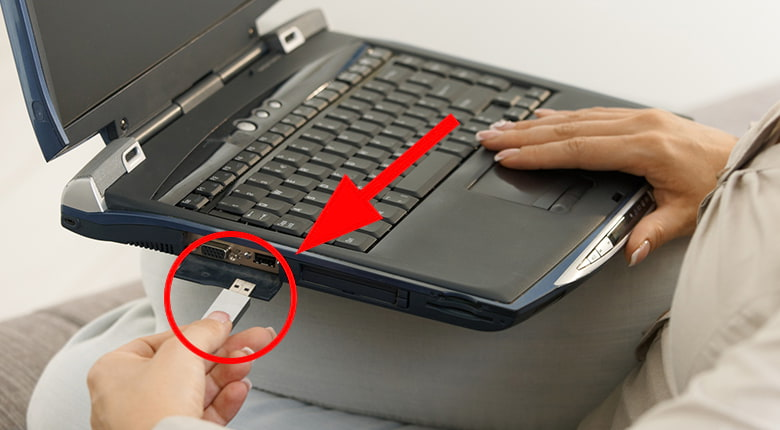
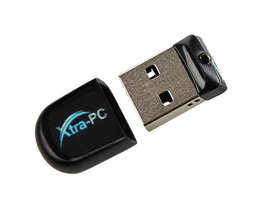

Haben Sie genug von Ihrem langsamen Computer? Machen Sie ihn superschnell mit diesem neuen günstigen Tool!
Ein schlaues neues Gerät spart Hunderte (sogar Tausende), und die großen Computerunternehmen freuen sich nicht darüber!
Ist Ihr Computer quälend langsam? Haben Sie sich überlegt, einen neuen „schnelleren“ Computer zu kaufen, aber schrecken Sie vor dem Preis zurück? Wünschen Sie sich einen billigeren, erschwinglicheren Weg zu einem neuen Computer? (Hinweis: es gibt – weiterlesen.)
Es ist unglaublich frustrierend, wenn ein Computer aus unersichtlichen Gründen langsam wird oder nicht mehr funktioniert. Und trotz aller Diagnosen, Aktualisierungen und Ausgaben scheint es immer genauso lange zu dauern, bis dieses sich drehende Rad oder die Sanduhr verschwindet. Ihr ehemals neuer, blitzschneller Computer wird einfach jeden Tag langsamer.
Zum Glück gibt es seit kurzer Zeit ein neues Gerät, das alte, langsame Computer tatsächlich wieder blitzschnell macht. Dieses Gerät als preisgünstig zu bezeichnen, wäre grob untertrieben.
Worum handelt es sich?
Es nennt sich Xtra-PC und falls Sie einen alten, langsamen Computer besitzen, dann ist es genau das, worauf Sie gewartet haben.
Xtra-PC ist ein kleiner USB-Stick, den Sie ganz einfach in den USB-Port Ihres Computers stecken, und schon verwandelt sich Ihr alter Computer sofort in ein neues Gerät. Es funktioniert bei jedem Computer (Mac oder Windows) – Laptops, Desktop-PCs und Netbooks aus dem Jahr 2004 oder später.
Das ist zweifellos die garantiert schnellste und einfachste Lösung, sich einen neuen Computer zuzulegen, ohne 600€, 800€, 1000€ oder noch mehr auszugeben. Starren Sie nie wieder auf sich drehende Rädchen oder Sanduhren!
Wie funktioniert es?
Ganz einfach! Es ist tatsächlich so einfach, als ob Sie mit den Fingern schnippen und zusehen würden, wie sich Ihr alter Computer wie durch Zauberhand in den neuen, superschnellen Computer verwandelt, den Sie sich immer gewünscht haben. Sie benötigen kein technisches Fachwissen, jeder kann es durchführen. Alles, was Sie zu tun haben, ist...
1. Einstecken:
Stecken Sie einfach Xtra-PC in einen USB-Port, während Ihr Computer abgeschaltet ist.
2. Starten Sie Ihren Computer:
Klicken Sie einfach auf 'Starten vom USB-Speicher' und schon kann es losgehen, hurra!
3. Freuen Sie sich über Ihren neuen PC:
In weniger als 15 Minuten werden Sie sprachlos sein, wie sich die Leistung Ihres Computers verändert hat.
Sie brauchen Xtra-PC nur ein einziges Mal einrichten und können das Gerät sogar bei mehreren Computern verwenden!
Sie haben keine Festplatte? Kein Problem!
Erstaunlicherweise funktioniert Xtra-PC sogar bei Computern ohne Festplatte. Sehr richtig! Ob die Festplatte kaputt oder beschädigt ist oder einfach fehlt – mit Xtra-PC arbeitet Ihr Computer wieder wie neu, sogar ohne Festplatte!
Was kann ich mit meinem Computer alles tun, der so gut wie neu ist?
Alles! Mit Xtra-PC brauchen Sie nicht viele hundert Dollar für einen neuen Computer ausgeben. Es würde einfach keinen Sinn machen. Aber der Erwerb von Xtra-PC macht durchaus Sinn (und deshalb sind die großen Computerunternehmen so sehr gegen dieses unglaublich leistungsstarke, kleine Gerät eingestellt).
Mit Xtra-PC können Sie all das tun, was Sie normalerweise machen...
- im Internet surfen
- soziale Netzwerke benutzen
- E-Mails schreiben
- Videos ansehen
- Spiele spielen
- sicher online einkaufen
- und vieles mehr!
Sie können Ihrem Computer sogar andere Programme hinzufügen, wenn Sie möchten. Sie würden gerne Skype herunterladen? Kein Problem, mit Xtra-PC ist das möglich.
Wie viel kostet es??
Das ist kein Scherz. Xtra-PC kostet nur 31,88€!
Außerdem haben Sie für 30 Tage eine Geld-zurück-Garantie. Es gibt einfach keinen guten Grund, Xtra-PC nicht auszuprobieren.
Sie können sich Xtra-PC direkt von der Webseite des Unternehmens holen, indem Sie hier klicken.
Achten Sie darauf, das Gerät über die offizielle Seite zu kaufen, denn es sind viele Fälschungen auf dem Markt.
Warum lieben Eltern Xtra-PC?
Eine unserer Leserinnen, Stephanie S. aus West Covina, Kalifornien, erzählte uns kürzlich:
"Meine neunjährige Tochter wünschte sich einen eigenen Computer. Aber ich wollte ganz sicher keine 649€ für einen neuen Computer ausgeben. Ich hatte noch einen alten Toshiba-Computer aus meinen College-Tagen herumliegen, der verstaubte, und als ich von Xtra-PC erfuhr, beschloss ich, es zu versuchen und WOW – VERBLÜFFEND!!! Mein alter, langsamer Toshiba aus der Zeit vor zehn Jahren ist wieder wie neu. Eine kleine Investition von 31,88€ hat mir Hunderte gespart!"
Also, besitzen Sie bereits einen neuen Computer (und wissen es nur noch nicht)?
Nachdem Sie jetzt von Xtra-PC erfahren haben, und was dies bei Ihrem alten Computer bewirken kann, stellt sich die folgende Frage nicht mehr: "Haben Sie einen alten, langsamen, nutzlosen Computer herumstehen?" Die Frage lautet vielmehr: "Haben Sie einen neuen, blitzschnellen, einsatzbereiten Computer, mit dem Sie alles tun können, und den Sie nur noch hernehmen und wiederbeleben müssen?"
Fangen Sie so schnell wie möglich an, Ihren blitzschnellen Computer zu genießen, indem Sie die folgenden Schritte durchführen:
Schritt 1: Bestellen Sie heute noch Xtra-PC, um vom 50-%-Rabatt zu profitieren.
Schritt 2: Stecken Sie es ein und starten Sie Ihren Computer neu.
Schritt 3: Lehnen Sie sich zurück und genießen Sie Ihren neuen, schnellen PC.
TIPP: Xtra-PC eignet sich großartig als Geschenk für alle, die einen alten, langsamen Computer besitzen, aber ihr mühsam verdientes Geld nicht für einen neuen ausgeben möchten.